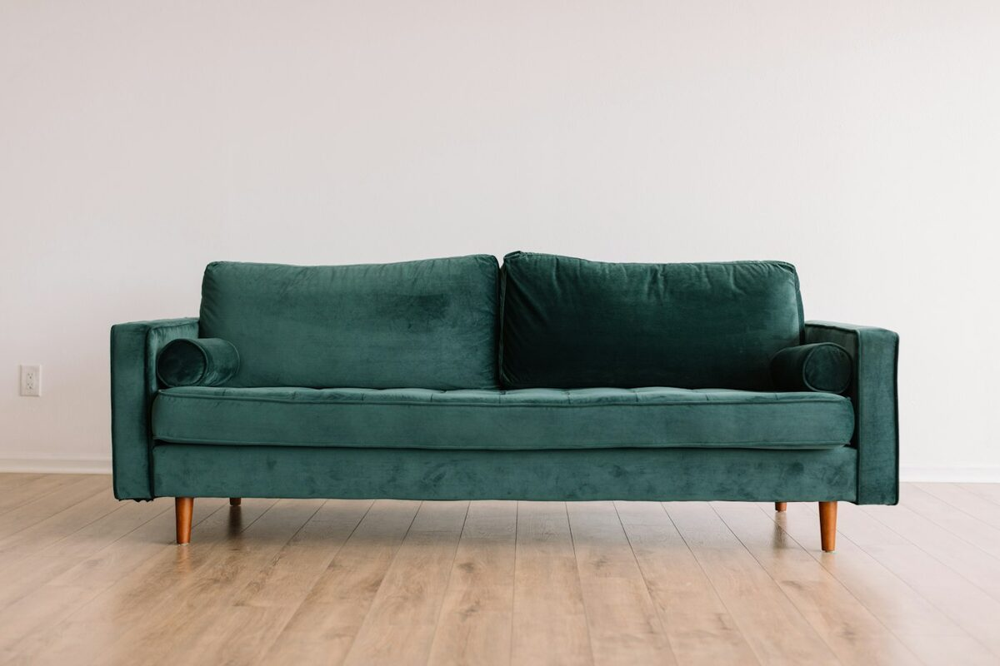

Cores
Paletas terrosas e cores profundas
O branco absoluto perdeu espaço para paletas quentes: terracota, ocre, verde-oliva e tons de barro. A cor saiu dos detalhes e foi para as peças grandes — sofás, armários e paredes inteiras.
- Terracota
- Oliva
- Ocre
- Barro
- Areia
Uma boa regra de proporção é 60% de cor neutra, 30% de cor secundária e 10% de cor de destaque.